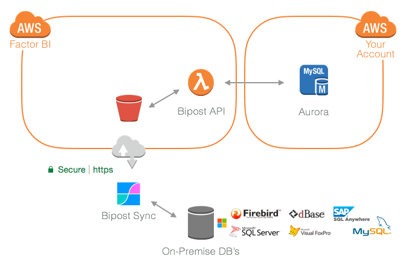

Overview¶
New! Two-way database synchronization! Learn more here.
Bipost (beta) is a simple database synchronization tool built for developers in mind.
Synchronize Microsoft SQL Server® and Firebird SQL (running on Windows) to any given Amazon Aurora MySQL instance, and back to your on-premises.
It is created to keep your databases on-premises while providing a way to extract and load specific sets of data to AWS Aurora.
It uses a similar ETL technique with recurring syncing in this order: Extract, Load & Transform.

How it works¶
- On every sync biPost.exe reads table schema's and data and uploads it to S3.
- Customize query criteria to your source DB using customData.json file.
- Destination bucket triggers an API which reads schema's, creates database and tables (if they don't exist) and loads the data.
- Before and after data is loaded to Aurora-MySQL you are able to call procedures and transform your data.
- Data on destination won't be duplicated if appropriate primary keys are set on source DB.
- biPost.exe can run manually or automatically with a scheduled Windows Task.
Bidirectional syncing¶
- Synchronize from Aurora-MySQL to on-premises.
- Once upload to Aurora finishes and transformations are done, the API initiates a download process.
- Customize query criteria to your Aurora DB by using outData.json file.
- API reads table schema's and data and is returned to your on-premises Windows.
- Configure to insert the returned data to your source DB (SQL Server or Firebird SQL), and Bipost.exe handles schema's create/alter and data loading.
- Primary keys set on Aurora are used on source DB to avoid duplicates.
- Before and after data is loaded to your source DB you are able to call procedures and transform your data.
- Learn more here.
Private Cloud¶
Bipost API calls your RDS instance on your AWS account.
Each RDS Aurora instance loads data by accessing a dedicated bucket, exclusive to your AWS account.
Architecture¶

- Upload to S3 is done through AWS SDK technology.
- S3 triggers an event and calls Bipost API built with Lambda.
- Lambda reads data and credentials and proceeds to connect to Aurora-MySQL.
- Aurora-MySQL is a managed database service, you don't have to worry about servers, software patching and other managing tasks.
- Aurora loads data from S3.
Done! Start building something amazing!
Checkout the Business Intelligence use case.
Road Map¶
We are currently developing a secure web page to automate all settings that are exchanged over email. Thank you for your patience and we look forward to provide a world-class service.
Release Notes¶
0.5.6 (beta) 2017-12-02¶
- Bidirectional syncing is here!
- Synchronize to any AWS Region.
- Performance improvements to API, now able to load nearly 1.5 million rows (or 280 MB uncompressed files) on a single call. Future releases will support much more since AWS Lambda recently doubled maximum memory capacity to 3 GB.
- Firebird transaction READ UNCOMMITTED to prevent Bipost.exe from being stopped while other transactions are still not committed.
- Initial and final statements on Aurora MySQL are disabled on recursive sync. This prevents excessive workload on your RDS instance.
- Bug fixes to API and Bipost.exe.
0.4.2 (beta) 2017-09-16¶
- Table schemas are now synchronized against source definition on every sync, details here.
- Bipost.exe bug fixes.
- Bipost API bug fixes.
0.4.0 (beta) 2017-08-20¶
- Custom connections added.
- Initial statement added to API.
- Special characters are deleted on string columns of 100 characters length or up.